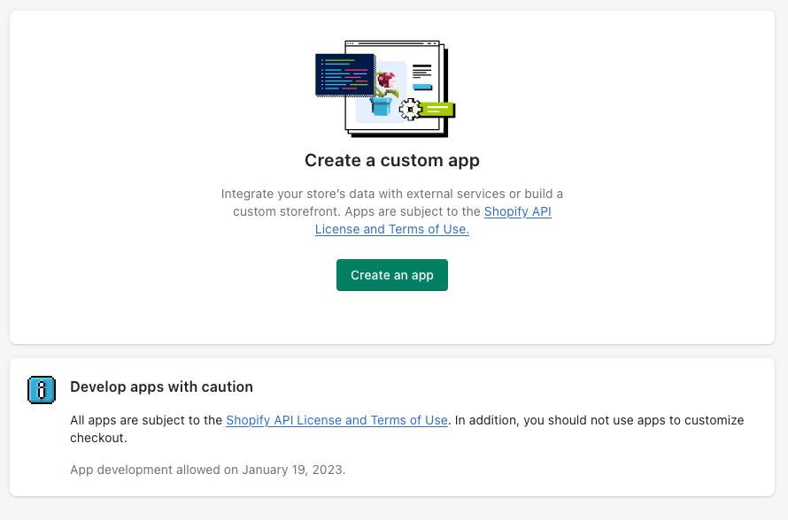

Creating API Keys in the Shopify Admin
ablestar-cli communictes with Shopify through the REST and GraphQL APIs. In order to access these API we need to generate API keys through the Shopify admin by creating a custom app. This document will show you how to do that.
Note
The steps here might be different as Shopify is constantly upgrading the admin section. If you notice a discrepancy let us know and we’ll update the instructions.
Open up App Developer in the Shopify admin
Go to the Shopify admin and click on Apps > on the left-hand menu. In the popup that opens up click on App and sales channel settings:
{kind=link}
Near the top of the page click on the Develop Apps link.
This will take you to the section of the admin where you can manage your custom apps and API keys.
Allow custom app development
If this is the first time you’ve created a custom app on this Shopify store you’ll need to enable custom app development. If you’ve already done this you can skip to the next section.
On the “Develop Apps” page you’ll see a message explaining that you need to enable development. We’ll click on the Allow custom app development button.
{kind=link}
Shopify will ask us again to confirm that we want to enable custom apps. Click on the Allow custom app development button once more.
Now you should see the page where you can create a new custom app:
{kind=link}
Creating a new custom app
From the “App development” page in settings click on the Create an app button.
In the popup enter a name for the app and click on Create app:
{kind=link}
You will be redirected to the main configuration page for your custom app.
Now we need to grant API permissions to the application. Click on the Configure Admin API scopes button.
You should see section where you can choose which permissions to grant the application.
As a best practice, we recommend that you choose the minimum permissions necessary for your use case. If you want to export and import products, customers and orders you can select the following:
read_products
write_products
read_orders
write_orders
read_customers
write_customers
Once you’ve selected the scopes you need, click on the Save button.
Now the app is configured, we just need to copy the API credentials so we can use them with
ablestar-cli. To get these credentials click on the API credentials tab at the top of the page.
Click on the Install app button. A confirmation dialog will appear and click on the Install to continue. Now Shopify will provide you with an access token. This token will only be displayed once so make sure to copy it to a safe place.
We also need to store the API key for the app. This is shown beneath the access token in the ‘API key and secret key’ section. Copy the API key to a safe place.
Next steps
Now you have the access token and API key for the custom app you just created. With this information you can run ablestar-cli to set up the credentials for your store:
$ ablestar-cli init